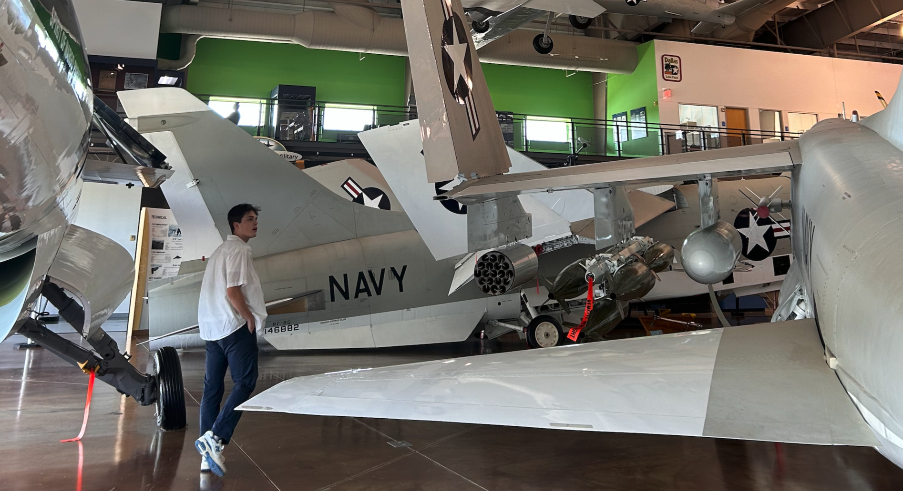

Personal Info

This is a good picture of me in my happy place. Keep reading if you're curious about who I am.
I love building things almost as much as I love taking things apart.
Software Engineering was an easy choice for me because it opens doors into many of the fields that I've been passionate about from a young age.
For as long as I can remember, I've always sought out a fundamental understanding of technology and the natural world.
My professional focus is on SWE and cybersecurity, while my personal passions are aviation, physics, and history.
I also love running, hiking, and camping.